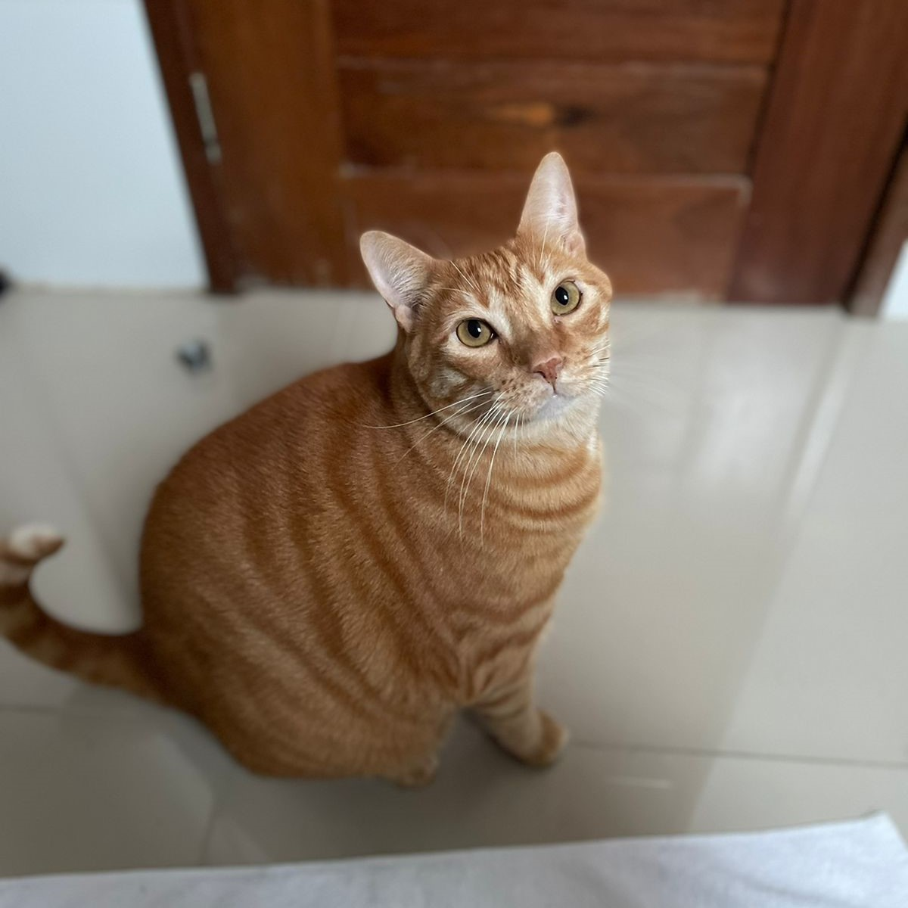
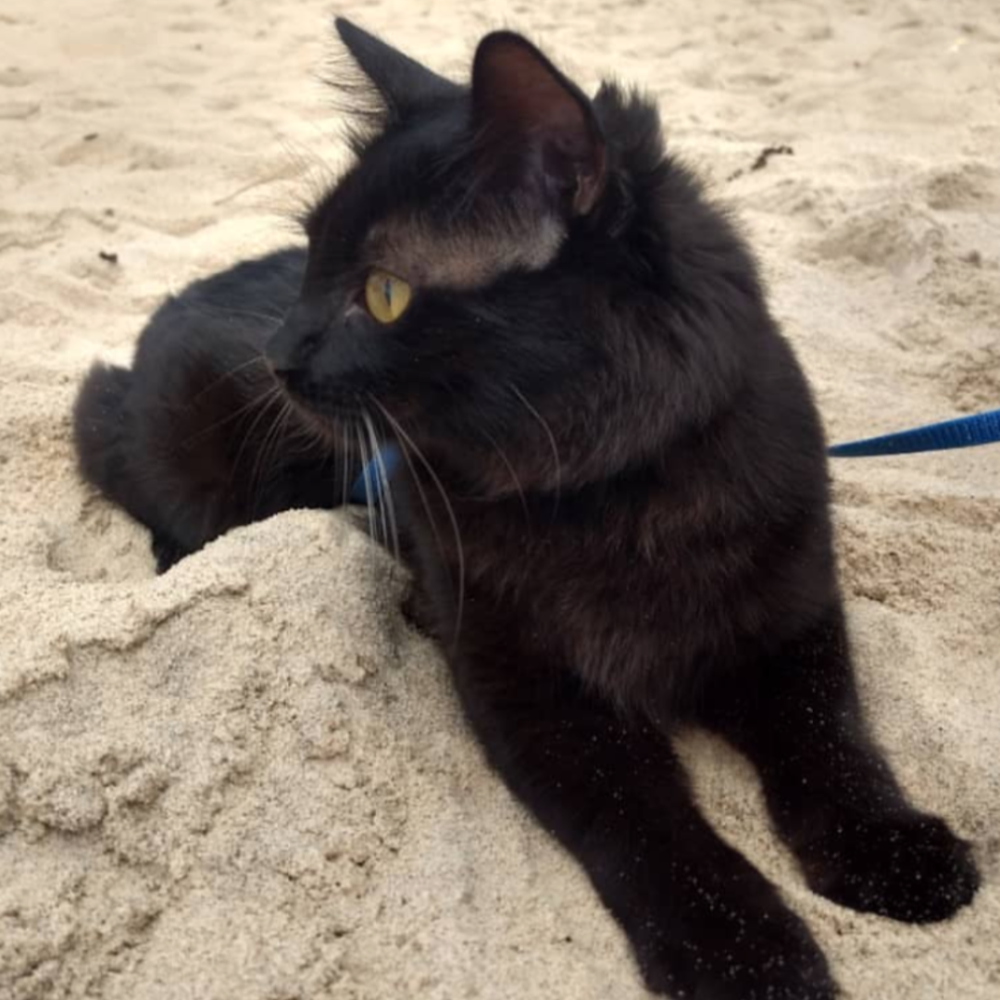
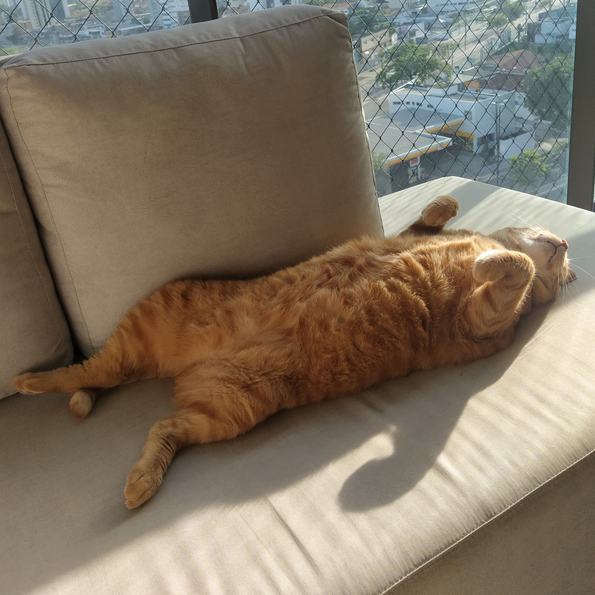
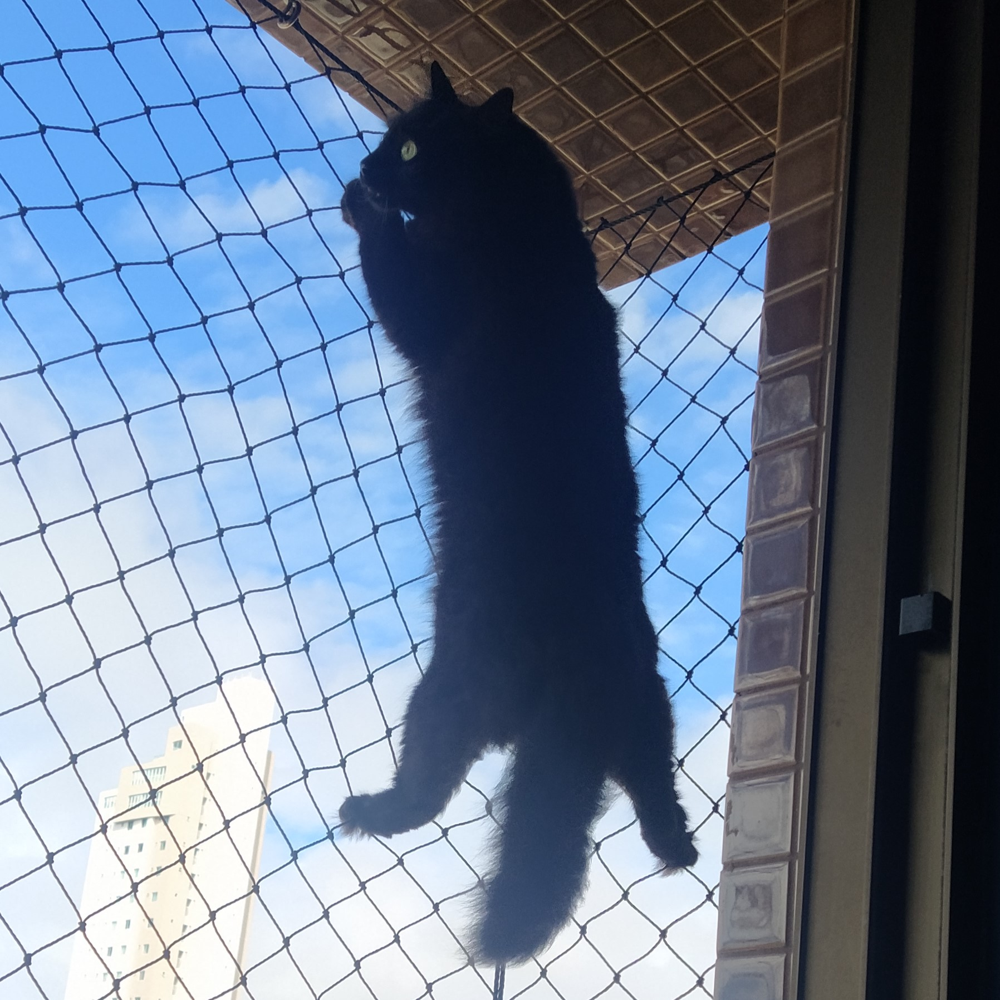
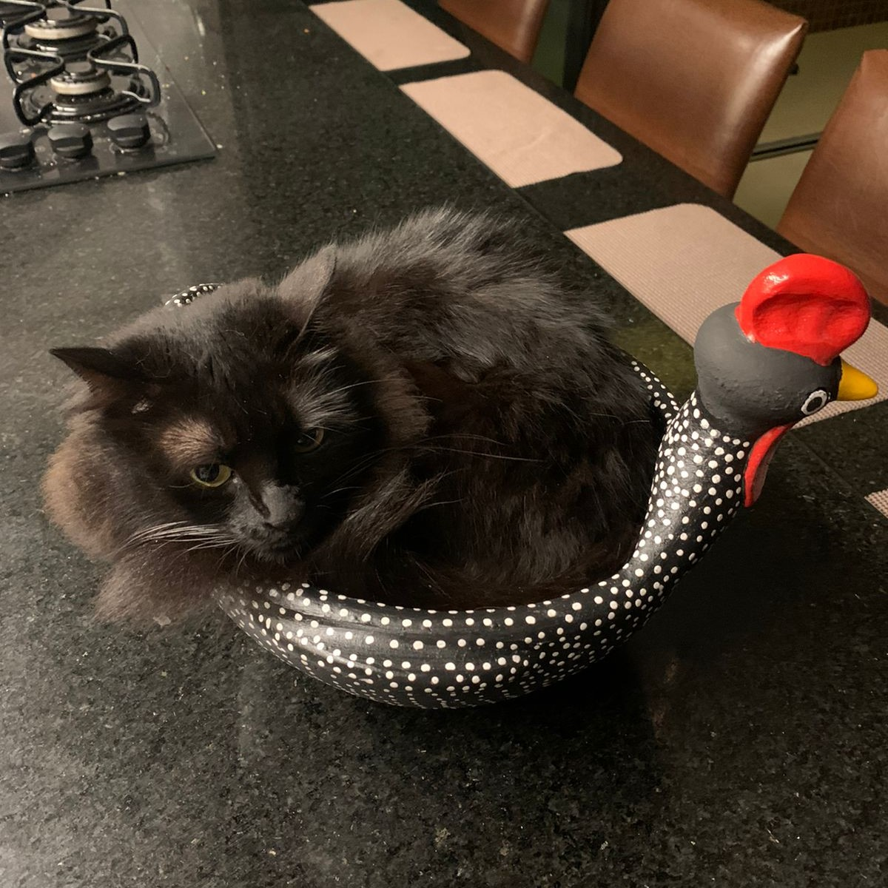
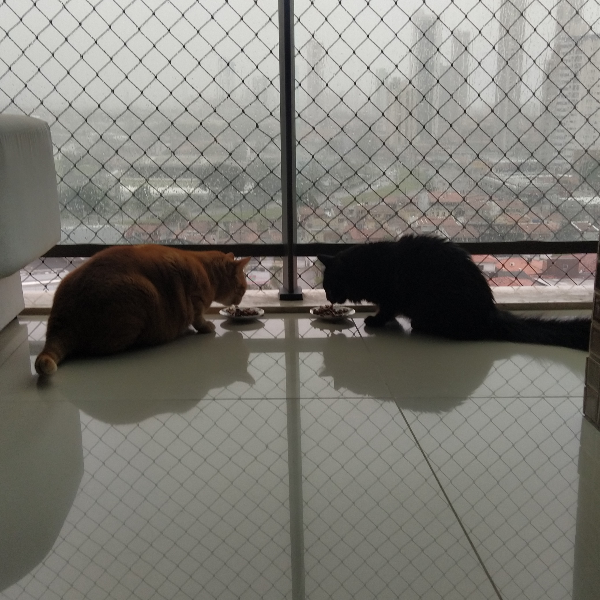
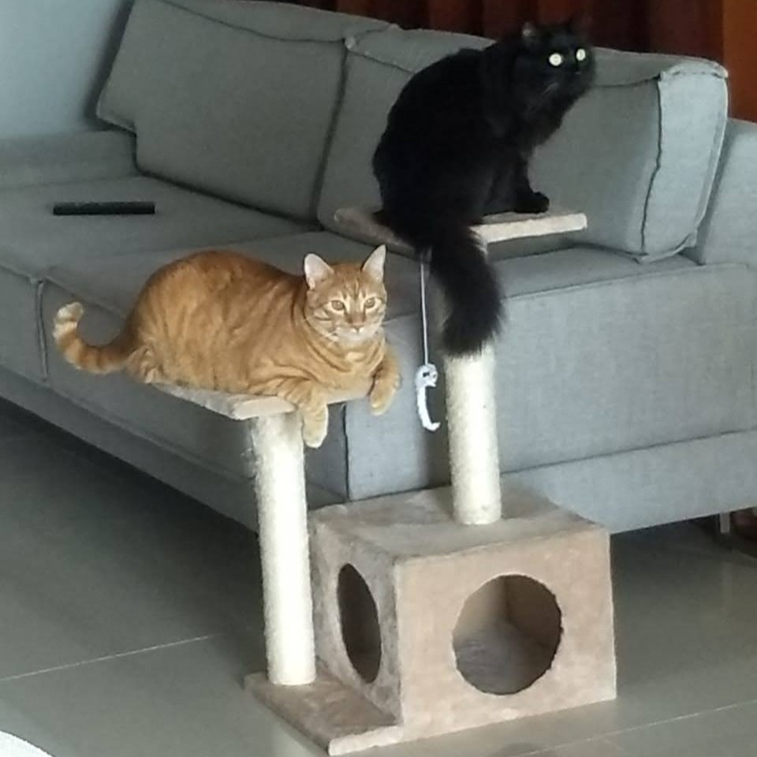
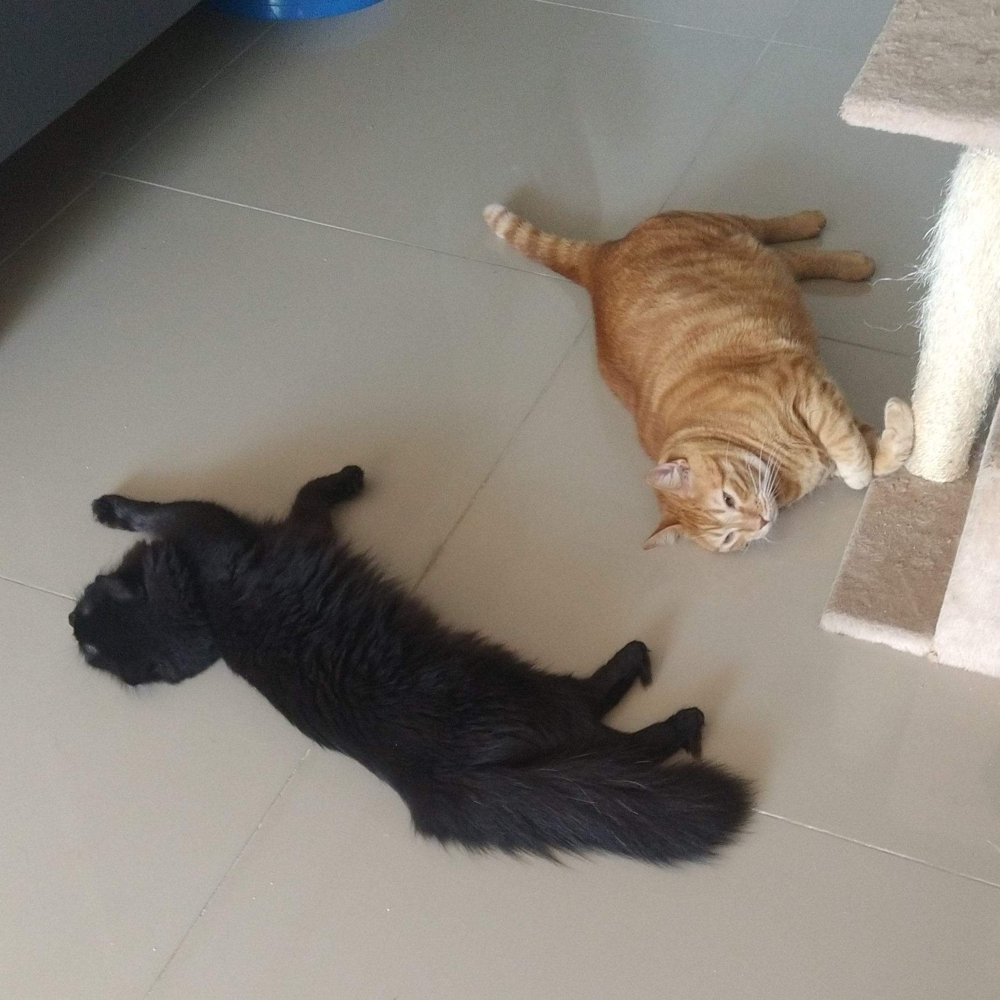

Este Site é sobre
os Meus Gatos
Appa e Mushu são os melhores gatos do mundo!
Appa é carinhoso, curioso, caçador e tem o quengo cheiroso.
Mushu é comilão, dorminhoco, conversador e tem a barriga fofinha.

Galeria de Fotos dos Gatos

Mushu pedindo comida.

Appa visitando a praia do Cabo Branco.

Mushu dormindo no sofá da varanda, tomando sol.

Appa escalando a rede para caçar um passarinho.

Appa enrolado na galinha de ovos.

Appa e Mushu almoçando juntos e olhando a chuva.

Os gatos juntos no poleiro.

Deitados juntos curtindo um soninho pós almoço.
“Na sua graça impecável e na sua superior autosuficiência vi nos gatos o símbolo da perfeita beleza e
da destacada
impassibilidade do próprio universo, objetivamente considerado, e no seu ar de silencioso mistério
residem para mim
toda a maravilha e todo o fascínio do desconhecido.”
-H.P. Lovecraft